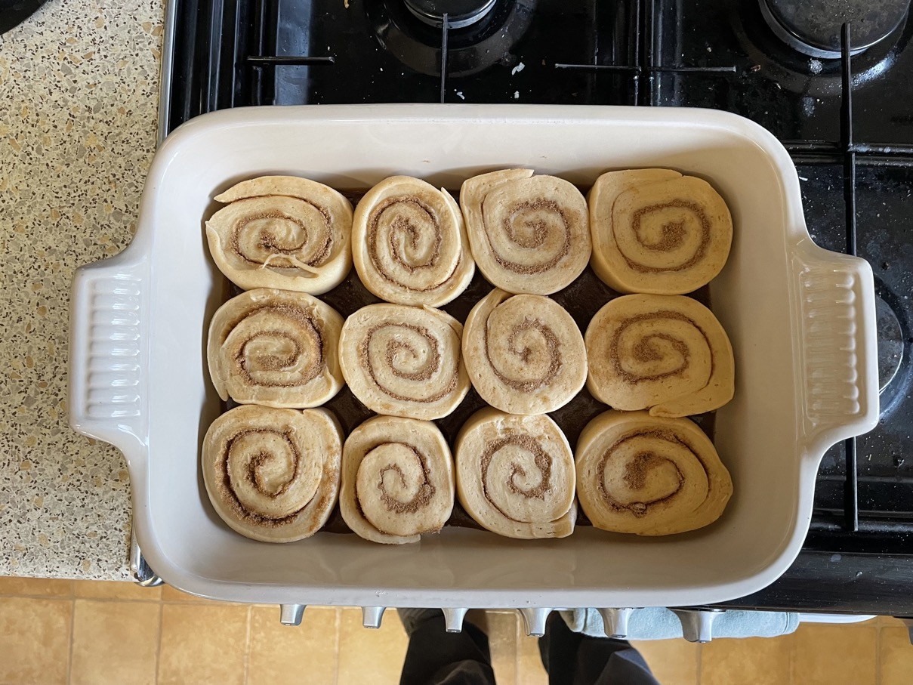

Sticky buns
Buttermilk
Whisk
-
- 100ml (103g) milk
- 20ml (20g) single cream
- ½ tsp lemon juice / white vinegar
- Warm in microwave
- Whisk in
Dough
- Whisk in bowl
- Add and whisk in
- buttermilk mixture
- 55g light brown sugar
- ½ tsp salt
- Gradually whisk in
- 60ml (55g) unsalted butter melted
- Mix in
- Knead dough for 2 mins to combine
- Leave to rise in bowl for 2 hours at room temperature till volume doubled
Baking dish sauce
- Heat in pan until sugar disolved and mixture bubbling
- 90g light brown sugar
- 40ml (37g) unsalted butter melted
- Mix in
- 35ml (34g) single cream
- ⅔ cup pecans toasted, chopped (optional)
- Place small ramekin face-down in one corner of 23x23cm (9") baking tray
- Pour sauce evenly over base of baking tray
Cinnamon sugar
- Mix
- 90g light brown sugar
- 2 tsp ground cinnamon
Buns
- Roll out dough to 12"x12" with short edge towards you
- Brush with leaving 1" border at top
- 18g unsalted butter melted
- Sprinkle evenly with cinnamon sugar
- Roll up tightly using bench scraper to help
- Put seam side down and even out shape
- Cut into 8 slices by sawing with sharp chef's knife
- Arrange in sauced baking tray
- Cover with cling film
- Leave for 2 hours till volume doubled
Baking
- Preheat oven to 180°C
- Cook for 30 mins rotating tray once
- Rest for 5 mins
- Invert buns onto rack and cover with scraped out sauce
Notes
- Increased cream and reduced sugar in sauce
- Buns go hard quickly next day
- Original recipe: The Food Lab, p170
- Made: 8 Feb 2023
Buy
- 200g unsalted butter
- 150ml single cream
Pics
